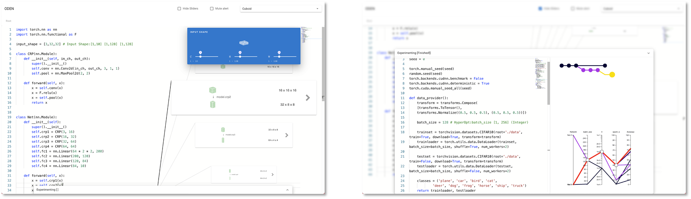

ODEN: Live Programming for Neural Network Architecture Editing
Chunqi Zhao, I-Chao Shen, Tsukasa Fukusato, Jun Kato, Takeo IgarashiAbstract
In deep learning application development, programmers tend to try different architectures and hyper-parameters until satisfied
with the model performance. Nevertheless, program crashes due to tensor shape mismatch prohibit programmers, especially novice
programmers, from smoothly going back and forth between neural network (NN) architecture editing and experimentation. We
propose to leverage live programming techniques in NN architecture editing with an always-on visualization. When the user edits the
program, the visualization can synchronously display tensor states and provide a warning message by continuously executing the
program to prevent program crashes during experimentation.
We implement the live visualization and integrate it into an IDE called
ODEN that seamlessly supports the “edit → experiment → edit → ···” repetition.
With ODEN, the user can construct the neural networkwith the live visualization and transits into experimentation to instantly train
and test the NN architecture. An exploratory user study is conducted to evaluate the usability, the limitations, and the potential of live visualization in ODEN.
Figures
Video
To appear